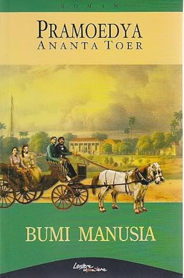
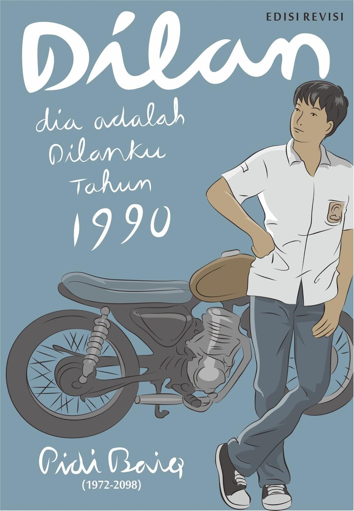

mengisahkan kehidupan Minke, seorang siswa HBS keturunan priyayi, yang menjadi satu-satunya orang Indonesia di antara siswa Belanda. Dengan status tersebut, ia mendapat kesempatan bersekolah di sekolah menengah atas berbahasa Belanda.Lulus dengan prestasi tinggi, Minke menyadari bahwa kehidupannya sebagai keturunan priyayi membuatnya lebih dihormati dibanding pribumi lain. Di sisi lain, ia juga menyadari ketidakadilan sosial dan rasialis terjadi di lingkungan sekitarnya.Cerita ini mencakup jalinan cinta Minke dan Annelies, putri dari Herman Mellema dan Nyai Ontosoroh. Hal itu membawa Minke pada petualangan yang menggugah serta menyentuh kompleksitas hubungan sosial maupun kelas.Meskipun Minke penuh privilege sebagai pribumi cerdas, interaksinya dengan masyarakat kolonial membuka matanya terhadap ketidaksetaraan. Begitu juga dengan berbagai isu-isu rasial.Hubungan persahabatan Minke dengan pelukis Perancis, Jean Marais, dan interaksinya dengan keluarga Mellema menggambarkan ketidakadilan sistem kolonial dari berbagai sudut pandang. Setelah kematian Herman Mellema, Minke dan Nyai Ontosoroh berjuang melawan hukum kolonial.

Dilan, siswa SMA di Bandung, dan Milea, siswi pindahan dari Jakarta. Sejak pertemuan pertama, Dilan mulai menunjukkan ketertarikannya dan mendekati Milea dengan cara yang tidak biasa.Pada saat itu, Milea masih berpacaran dengan Beni yang tinggal di Jakarta. Namun, setelah mengalami perselisihan saat mengunjungi Jakarta, Milea memutuskan untuk mengakhiri hubungan itu.Saat berada di Jakarta untuk mendukung temannya yang mengikuti lomba, Milea sempat berjanji bertemu dengan Beni. Namun, Beni datang terlambat dan marah setelah mengetahui Milea makan bersama teman laki-lakinya. Kejadian tersebut menjadi titik akhir hubungan mereka.Meski ragu, Milea perlahan mulai membuka diri terhadap perhatian Dilan. Setelah itu, hubungan Dilan dan Milea berkembang semakin dekat. Mereka mulai saling mengenal keluarga satu sama lain dan sering menghabiskan waktu bersama.Namun, hubungan Milea dan Dilan tak berjalan dengan mulus begitu saja. Ada berbagai tantangan yang harus mereka hadapi. Lantas, bagaimana kelanjutan kisah cinta dua remaja SMA di Bandung dalam Dilan 1990 novel ini?